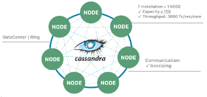
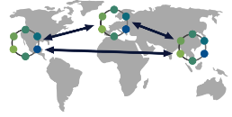
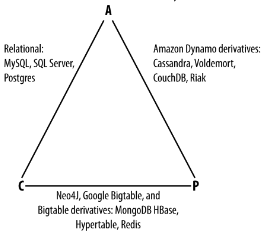
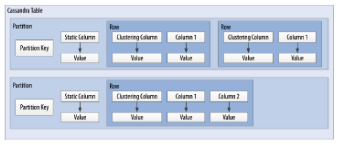
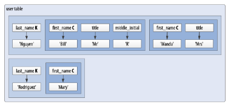
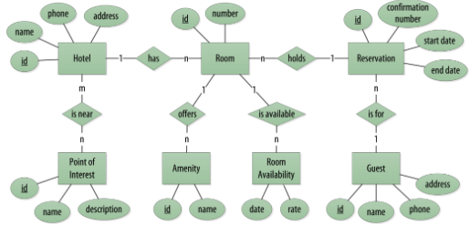
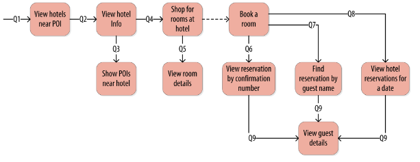
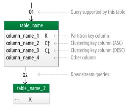
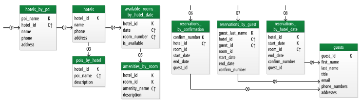
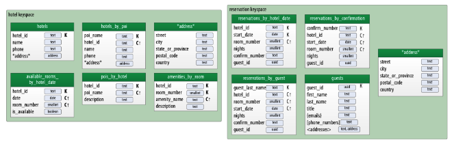

Introducción a Cassandra#
Manuel Torres
Máster en Ingeniería Informática. Universidad de Almería
Cassandra es una base de datos distribuida y escalable que ofrece alta disponibilidad y tolerancia a fallos. Fue desarrollada inicialmente por Facebook y donada posteriormente a la Apache Software Foundation, convirtiéndose, junto a MongoDB, en una de las bases de datos NoSQL más populares. Con un modelo de datos flexible y una arquitectura descentralizada, Cassandra permite el escalado horizontal y la replicación de datos en múltiples nodos. Su lenguaje de consulta basado en SQL facilita la interacción con la base de datos. En resumen, Cassandra es una solución robusta para aplicaciones que requieren escalabilidad y fiabilidad en entornos distribuidos.
Objetivos
Conocer las características y ventajas de Cassandra como base de datos distribuida y escalable.
Comprender los conceptos de consistencia eventual y replicación de datos en Cassandra.
Aprender a diseñar y gestionar clústeres de Cassandra para aplicaciones de alta disponibilidad y tolerancia a fallos.
Familiarizarse con el lenguaje de consulta CQL y las mejores prácticas para interactuar con Cassandra.
Explorar casos de uso y ejemplos de aplicaciones que se benefician de las capacidades de escalabilidad y tolerancia a fallos de Cassandra.
Crear una API REST utilizando Cassandra como base de datos para una aplicación web.
Tip
Disponible el repositorio de GitHub con el código fuente de la API REST desarrollada en este tutorial.
:numbered:
Introducción#
Cassandra es una base de datos distribuida y escalable que fue desarrollada inicialmente por Facebook en 2008 y posteriormente donada a la Apache Software Foundation en 2009. Desde entonces, ha experimentado un crecimiento significativo y se ha convertido en una de las bases de datos NoSQL más populares para aplicaciones que requieren escalabilidad y alta disponibilidad. Como características principales destacan:
Modelo de datos: Cassandra utiliza un modelo de datos orientado a filas con características de almacén de columnas anchas (wide column store), lo que permite una gran flexibilidad en la estructura de los datos. Por ejemplo, puedes tener columnas diferentes para cada fila, lo que es útil para modelos de datos dinámicos, como los perfiles de usuario.
Distribuida y descentralizada: Cassandra está diseñada para ser distribuida y descentralizada. Utiliza un modelo de arquitectura peer-to-peer en el que no hay un nodo maestro centralizado. Esto permite una alta disponibilidad y escalabilidad horizontal.
Escalable: Cassandra puede escalar horizontalmente añadiendo más nodos al clúster para manejar aumentos en la carga de trabajo y el tamaño de los datos. Por ejemplo, Netflix utiliza Cassandra para manejar miles de millones de peticiones de transmisión de vídeo al día.
Tolerante a fallos: Gracias a su arquitectura descentralizada y distribuida, Cassandra es tolerante a fallos. Si un nodo falla, el sistema sigue funcionando sin interrupción, ya que los datos están replicados en varios nodos.
Consistencia eventual: Cassandra utiliza un modelo de consistencia eventual, lo que significa que no garantiza la consistencia de los datos en todo momento. En lugar de eso, prioriza la disponibilidad y la tolerancia a fallos. Esto es útil para aplicaciones que pueden aceptar cierto grado de inconsistencia temporal en los datos.
Cabe destacar también las analogías con otros sistemas distribuidos como Amazon Dynamo y Google Bigtable, que han influido en el diseño y la arquitectura de Cassandra, así como su lenguaje de consulta basado en SQL (CQL) que facilita la interacción con la base de datos.
Amazon Dynamo: El modelo de distribución descentralizada y tolerante a fallos de Cassandra está inspirado en Amazon Dynamo, un servicio de almacenamiento distribuido desarrollado por Amazon Web Services.
Google Bigtable: El modelo de datos de Cassandra se asemeja al modelo de datos de Google Bigtable, que es una base de datos NoSQL diseñada para manejar grandes volúmenes de datos estructurados, como los datos de los motores de búsqueda.
Lenguaje de consulta basado en SQL: Aunque Cassandra utiliza su propio lenguaje de consulta llamado CQL (Cassandra Query Language), está influenciado por SQL y proporciona una sintaxis familiar para interactuar con la base de datos. Por ejemplo, en Cassandra puedes ejecutar consultas como esta para recuperar datos de una tabla como si se tratase de una base de datos relacional:
SELECT *
FROM last_played_songs_by_user
WHERE song_id = 123e4567-e89b-12d3-a456-426614174001;
Una base de datos orientada a filas (Wide column store)#
Cassandra utiliza un modelo de datos orientado a filas con características de almacén de columnas anchas (wide column store), lo que proporciona una gran flexibilidad y escalabilidad en el almacenamiento y acceso a los datos. A continuación se describen las principales características de este modelo:
Clave de particionado: La clave de particionado en Cassandra es única para cada fila y se utiliza para distribuir las filas por los nodos del clúster. Por ejemplo, si tenemos una tabla de usuarios y utilizamos el
user_idcomo clave de particionado, Cassandra distribuirá las filas de usuarios en diferentes nodos en función deluser_id.Modelo disperso: Cassandra utiliza un modelo disperso en el que las filas pueden tener columnas diferentes. Esto significa que no se guarda espacio para columnas no utilizadas en cada fila, lo que reduce el almacenamiento y mejora la eficiencia. Por ejemplo, si tenemos una tabla de usuarios y solo algunas filas tienen información adicional como la dirección, solo se almacenará la dirección para esas filas específicas.
Clave de ordenación: Los valores de fila en Cassandra se almacenan según una clave de ordenación para mejorar el rendimiento de las consultas. Esto permite recuperar eficientemente filas en función de un rango de valores de clave de ordenación. Por ejemplo, si tenemos una tabla de tweets y utilizamos el
timestampcomo clave de ordenación, podemos recuperar todos los tweets de un usuario en un rango de tiempo específico de manera eficiente.
A continuación se muestra un ejemplo de cómo se podrían definir tablas en Cassandra utilizando estos conceptos:
CREATE TABLE IF NOT EXISTS user_data (
user_id UUID,
username TEXT,
email TEXT,
address TEXT,
PRIMARY KEY (user_id)
);
CREATE TABLE IF NOT EXISTS tweets (
user_id UUID,
tweet_id UUID,
tweet_content TEXT,
timestamp TIMESTAMP,
PRIMARY KEY (user_id, timestamp, tweet_id)
);
En el primer ejemplo, user_id se utiliza como la clave de particionado para distribuir las filas de usuarios por los nodos del clúster. La tabla puede tener columnas adicionales como username, email y address, pero no se necesita espacio de almacenamiento para estas columnas si no se utilizan en todas las filas.
En el segundo ejemplo, user_id se utiliza como la clave de particionado y timestamp como la clave de ordenación para distribuir y ordenar eficientemente los tweets de los usuarios en el clúster. Esto permite recuperar rápidamente los tweets de un usuario en un rango de tiempo específico. El tweet_id se utiliza como una columna adicional para identificar de forma única cada tweet, y se añade al final de la clave primaria para garantizar la unicidad de las filas.
Tal y como veremos más adelante, la clave primaria de la tabla tweets se puede definir de otra manera en la que sea más explícito las columnas que son clave de particionado y de ordenación. A continuación se muestra un ejemplo de la tabla tweets con una clave primaria más explícita:
CREATE TABLE IF NOT EXISTS tweets (
user_id UUID,
timestamp TIMESTAMP,
tweet_id UUID,
tweet_content TEXT,
PRIMARY KEY ((user_id,) timestamp, tweet_id)
WITH CLUSTERING ORDER BY (timestamp DESC)
);
Descentralización en Cassandra: Arquitectura Peer-to-Peer#
Cassandra se basa en una arquitectura descentralizada que elimina la necesidad de definir nodos principales y secundarios. En su lugar, todos los nodos del clúster son idénticos, lo que proporciona una simetría de servidores y una mayor disponibilidad del sistema.
Características de la descentralización#
Arquitectura Peer-to-Peer: En Cassandra, todos los nodos del clúster se comunican entre sí de manera directa, sin depender de nodos principales o secundarios. Esto crea un entorno de red distribuida en el que todos los nodos son iguales en términos de autoridad y responsabilidad.
Protocolo Gossip: Cassandra utiliza el protocolo gossip para mantener una lista de nodos disponibles en el clúster. Este protocolo permite que los nodos intercambien información sobre su estado y la topología del clúster de manera eficiente y descentralizada.
Facilidad de configuración: Todos los nodos en un clúster de Cassandra se configuran de manera idéntica, lo que simplifica la administración y la configuración del sistema. No es necesario configurar nodos principales o secundarios, lo que reduce la complejidad y el riesgo de fallos de configuración.
Alta disponibilidad: Con todos los nodos configurados de manera idéntica, no hay un único punto de fallo en el sistema. Esto significa que no hay fallos de servicio debido a la caída de nodos individuales, ya que otros nodos pueden asumir la carga de trabajo de manera automática.
Ejemplo de configuración de nodos#
A continuación se muestra un ejemplo de cómo se podrían configurar los nodos en un clúster de Cassandra:
# Configuración del nodo 1
listen_address: 192.168.1.1
rpc_address: 0.0.0.0
seed_provider:
- class_name: org.apache.cassandra.locator.SimpleSeedProvider
parameters:
- seeds: "192.168.1.1,192.168.1.2,192.168.1.3"
# Configuración del nodo 2
listen_address: 192.168.1.2
rpc_address: 0.0.0.0
seed_provider:
- class_name: org.apache.cassandra.locator.SimpleSeedProvider
parameters:
- seeds: "192.168.1.1,192.168.1.2,192.168.1.3"
# Configuración del nodo 3
listen_address: 192.168.1.3
rpc_address: 0.0.0.0
seed_provider:
- class_name: org.apache.cassandra.locator.SimpleSeedProvider
parameters:
- seeds: "192.168.1.1,192.168.1.2,192.168.1.3"
En este ejemplo, todos los nodos se configuran con direcciones IP y proveedores de semillas idénticos, lo que garantiza una configuración uniforme y una comunicación eficiente entre los nodos del clúster.
Arquitectura de Cassandra: Nodos, anillos y clústeres#
En Cassandra, la arquitectura se basa en la distribución de datos en nodos, que están organizados en anillos dentro de data centers, y varios data centers forman un clúster.
Componentes de la arquitectura#
Nodo: En Cassandra, un nodo es el lugar donde se almacenan los datos. Cada nodo puede ser responsable de almacenar una parte del conjunto de datos completo. Los nodos se distribuyen en varios data centers para mejorar la disponibilidad y la tolerancia a fallos.
Data Center (Anillo): Un data center en Cassandra es un conjunto de nodos que están físicamente ubicados juntos. Los nodos dentro del mismo data center se comunican entre sí de manera eficiente, lo que reduce la latencia y mejora el rendimiento.

Cluster: Un clúster en Cassandra es un conjunto de data centers que trabajan juntos para proporcionar una solución de almacenamiento de datos distribuida y altamente disponible. Los clústeres pueden estar compuestos por uno o más data centers.

Replicación de datos#
La replicación de datos en Cassandra se controla mediante el factor de replicación y la estrategia de replicación.
Factor de replicación: El factor de replicación representa el número de copias deseadas de cada conjunto de datos. Esto permite que los datos estén replicados en varios nodos para proporcionar redundancia y tolerancia a fallos. Por ejemplo, si tenemos un factor de replicación de 3, cada conjunto de datos se replicará en tres nodos diferentes.
Estrategia de replicación: La estrategia de replicación determina dónde colocar las réplicas de los datos en el clúster. Cassandra proporciona varias estrategias de replicación, entre las que se incluyen:
SimpleStrategy (Desarrollo): Esta estrategia coloca las réplicas en nodos consecutivos alrededor del anillo. Es útil para entornos de desarrollo y pruebas donde se desea una configuración simple y rápida.
NetworkTopologyStrategy (Producción): Esta estrategia permite definir factores de replicación diferentes para cada data center en el clúster. Es útil para entornos de producción donde se desea una mayor flexibilidad y control sobre la distribución de réplicas en diferentes ubicaciones geográficas.
A continuación se muestra un ejemplo de cómo se podría configurar la estrategia de replicación en Cassandra:
CREATE KEYSPACE IF NOT EXISTS my_keyspace
WITH replication = {
'class': 'NetworkTopologyStrategy',
'datacenter1': 3,
'datacenter2': 2
};
En este ejemplo, estamos creando un keyspace llamado my_keyspace con la estrategia de replicación NetworkTopologyStrategy. Hemos especificado que queremos 3 réplicas en datacenter1 y 2 réplicas en datacenter2.
Note
Los data centers no se crean de forma explícita en Cassandra. Realmente, son el resultado de la configuración de cada nodo del cluster, que especifica el data center al que pertenece. Por ejemplo, si configuramos tres nodos con el nombre de data center dc1, Cassandra considerará que esos nodos pertenecen al mismo data center. Por tanto, se ha creado el data center dc1 de forma implícita.
Consistencia eventual en Cassandra: Factor de replicación y Nivel de consistencia#
En Cassandra, la consistencia eventual es un modelo de consistencia que prioriza la disponibilidad y la tolerancia a fallos sobre la consistencia estricta en todo momento. Esto significa que las actualizaciones se propagan a todas las réplicas de los datos, pero puede llevar un tiempo hasta que todas las réplicas estén completamente actualizadas y consistentes.
Consideraciones sobre la consistencia eventual#
Al hablar de la consistencia eventual en Cassandra, es importante tener en cuenta los siguientes aspectos:
Factor de replicación: Como se ha comentado anteriormente, el factor de replicación en Cassandra representa el número de nodos a los que se propagan los datos. Esto permite que los datos estén replicados en varios nodos para proporcionar redundancia y tolerancia a fallos. Por ejemplo, si tenemos un factor de replicación de 3, cada conjunto de datos se replicará en tres nodos diferentes.
Actualizaciones asíncronas: En la consistencia eventual, las actualizaciones se propagan a todas las réplicas de los datos de manera asíncrona. Esto significa que una vez que se realiza una actualización en un nodo, esta se propaga a otras réplicas en segundo plano, pero no se espera una confirmación inmediata de todas las réplicas.
Consistencia garantizada: A pesar de que las actualizaciones se propagan de manera asíncrona, todas las réplicas terminarán siendo consistentes eventualmente. Esto se debe a que las actualizaciones se aplican en el mismo orden en todas las réplicas, lo que garantiza que todas las réplicas eventualmente reflejen el mismo estado de los datos.
Nivel de consistencia#
En Cassandra, el nivel de consistencia es especificado por cada operación de cliente y controla cuántas réplicas deben dar un ACK en escrituras o devolver datos en lecturas. El nivel de consistencia es un compromiso entre consistencia y rendimiento, y permite a los desarrolladores ajustar el equilibrio según las necesidades de su aplicación.
Por ejemplo, un nivel de consistencia de ONE requiere que solo una réplica responda a una operación de escritura o lectura para considerarla exitosa, lo que ofrece un rendimiento más alto pero menor consistencia. Por otro lado, un nivel de consistencia de QUORUM requiere que la mayoría de las réplicas respondan, lo que ofrece una mayor consistencia pero a costa de un rendimiento ligeramente más bajo.
Note
El nivel de consistencia predeterminado en Cassandra es ONE, lo que significa que solo se requiere una réplica para que una operación sea considerada exitosa. No obstante, este nivel de consistencia puede no ser suficiente en entornos donde se requiere una mayor consistencia en los datos.
El nivel de consistencia se puede especificar en cada operación de cliente en Cassandra para controlar el grado de consistencia deseado. Se puede establecer a nivel de consulta o a nivel de sesión, lo que permite a los desarrolladores ajustar la consistencia según las necesidades de su aplicación.
A continuación se muestra un ejemplo en CQL de cómo se podría especificar el nivel de consistencia en una operación de lectura en Cassandra utilizando la cláusula CONSISTENCY. Después, se restablece el nivel de consistencia a su valor predeterminado:
CONSISTENCY QUORUM;
SELECT * FROM my_table WHERE id = '123';
CONSISTENCY ONE;
A continuación se muestra un ejemplo en Java de cómo se podría especificar el nivel de consistencia en una operación de lectura en Cassandra:
Statement statement = QueryBuilder.select().all().from("my_keyspace", "my_table").where(QueryBuilder.eq("id", id)).setConsistencyLevel(ConsistencyLevel.QUORUM);
En este ejemplo, estamos realizando una consulta a la tabla my_table en el keyspace my_keyspace, y hemos especificado un nivel de consistencia de QUORUM para asegurar una mayor consistencia en la lectura de datos.
Teorema de CAP y Bases de datos distribuidas#
El Teorema de CAP es fundamental para comprender las limitaciones y compromisos en los sistemas distribuidos, especialmente en bases de datos a gran escala. El Teorema de CAP establece que en un sistema distribuido a gran escala, es imposible garantizar simultáneamente tres características clave:
Consistencia (Consistency): Significa que todos los clientes leerán el mismo valor, aunque haya escrituras concurrentes en el sistema. En otras palabras, todas las operaciones de lectura reflejarán el valor más reciente de una escritura exitosa.
Disponibilidad (Availability): Indica que todos los clientes podrán leer y escribir datos en el sistema en todo momento, sin importar si algún nodo o componente del sistema está experimentando problemas.
Tolerancia a la partición (Partition Tolerance): Se refiere a la capacidad del sistema para seguir funcionando de manera coherente incluso si hay cortes en la red que impiden la comunicación entre algunos nodos del sistema.
Compromisos en bases de datos distribuidas#
En el contexto de las bases de datos distribuidas a gran escala, el Teorema de CAP nos obliga a elegir entre dos prestaciones entre las tres mencionadas:
Si priorizamos Consistencia y Disponibilidad, podemos enfrentarnos a problemas de tolerancia a particiones. En otras palabras, durante una partición de red, el sistema puede optar por ser consistente o disponible, pero no ambos al mismo tiempo.
Si priorizamos Disponibilidad y Tolerancia a la partición, es posible que tengamos que sacrificar la consistencia en ciertas circunstancias. Esto significa que los datos pueden no estar inmediatamente consistentes en todos los nodos durante una partición de red, pero el sistema seguirá respondiendo a las solicitudes de lectura y escritura.
La figura siguiente ilustra los compromisos en un sistema distribuido según el Teorema de CAP.

Para ilustrar estos compromisos, consideremos un ejemplo en el contexto de una base de datos distribuida:
Supongamos que tenemos una base de datos distribuida que prioriza la Disponibilidad y la Tolerancia a la partición sobre la Consistencia. Durante una partición de red, un cliente podría escribir datos en un nodo y luego intentar leerlos desde otro nodo. Debido a la partición, los nodos pueden no estar inmediatamente sincronizados, lo que podría resultar en lecturas inconsistentes hasta que se resuelva la partición.
Por ejemplo, en el contexto de una red social, durante una partición de red, un usuario podría realizar una publicación en su feed de noticias y luego intentar ver esa publicación desde otro dispositivo. Debido a la partición, los servidores que almacenan los datos pueden no estar inmediatamente sincronizados, lo que podría resultar en la publicación no apareciendo de inmediato en el feed del usuario hasta que se resuelva la partición. En este caso, se prioriza la disponibilidad y la tolerancia a la partición para garantizar que los usuarios puedan seguir accediendo y utilizando la plataforma, aunque las actualizaciones puedan no reflejarse instantáneamente en todos los nodos.
En el contexto de una plataforma de streaming, durante una partición de red, un usuario podría comenzar a ver un programa en un dispositivo y luego intentar continuar viéndolo en otro dispositivo. Debido a la partición, los servidores de la plataforma pueden no estar inmediatamente sincronizados, lo que podría resultar en la pérdida de progreso o la falta de sincronización en la reproducción entre dispositivos hasta que se resuelva la partición. En este caso, se prioriza la disponibilidad y la tolerancia a la partición para garantizar que los usuarios puedan seguir viendo contenido sin interrupciones, aunque la experiencia de usuario pueda verse afectada temporalmente por la falta de consistencia en los datos entre los servidores.
Estos son sólo unos ejemplos de cómo el Teorema de CAP influye en el diseño y el funcionamiento de las bases de datos distribuidas a gran escala. Al comprender estos compromisos, los equipos de desarrollo pueden tomar decisiones informadas sobre la arquitectura y la configuración de sus sistemas distribuidos.
Modelado de datos en Cassandra#
El modelado de datos en Cassandra es fundamental para diseñar esquemas eficientes que aprovechen las características de escalabilidad y distribución de esta base de datos NoSQL.
Clave compuesta en Cassandra#
En Cassandra, se utiliza una clave compuesta para representar particiones, que son grupos de filas relacionadas que se almacenan juntas en los nodos del clúster. Esta clave compuesta consta de dos partes principales:
Clave de partición: Determina los nodos en los que se almacenan las filas relacionadas. En otras palabras, es responsable de la distribución de datos en el clúster. Por ejemplo, si tenemos una tabla de usuarios y utilizamos el
user_idcomo clave de partición, las filas de cada usuario se almacenarán juntas en los nodos según suuser_id.Columnas de clustering: Definen una ordenación de las filas dentro de una partición. Esto permite realizar consultas eficientes y ordenadas dentro de una partición. Por ejemplo, si tenemos una tabla de mensajes y utilizamos el
timestampcomo columna de clustering, los mensajes se ordenarán cronológicamente dentro de cada partición de usuario.
Columnas estáticas en Cassandra#
En Cassandra, las columnas estáticas son aquellas cuyos valores son compartidos (comunes) en todas las filas de una partición. Estas columnas se almacenan solo una vez por partición y son útiles para almacenar metadatos o atributos comunes a todas las filas dentro de una partición. Por ejemplo, si tenemos una tabla de posts en un blog y queremos almacenar el nombre del autor para cada post, podríamos utilizar una columna estática para el nombre del autor, ya que este valor será el mismo para todos los posts dentro de una partición de usuario.
A continuación se muestra un ejemplo de cómo se podría diseñar un esquema de tabla en Cassandra utilizando estos conceptos:
CREATE TABLE IF NOT EXISTS user_posts (
user_id UUID,
post_id UUID,
post_title TEXT,
post_content TEXT,
author_name TEXT STATIC, ①
created_at TIMESTAMP,
PRIMARY KEY (user_id, created_at, post_id)
);
Columna estática para el nombre del autor
En este ejemplo, user_id se utiliza como clave de partición para agrupar los posts de cada usuario juntos en los nodos del clúster. La columna created_at se utiliza como columna de clustering para ordenar los posts cronológicamente dentro de cada partición de usuario. La columna author_name es una columna estática que almacena el nombre del autor, ya que este valor es el mismo para todos los posts de un usuario específico.
Componentes de Cassandra: De Abajo hacia Arriba#
A continución se describen los componentes de Cassandra, desde el nivel más bajo hasta el más alto, que trabajan juntos para proporcionar una base de datos distribuida y altamente disponible.
Columna: En Cassandra, una columna es un par clave-valor que almacena datos. Cada columna tiene un nombre único y un valor asociado. Las columnas se agrupan en filas y se organizan en particiones dentro de las tablas.
Fila: Una fila en Cassandra es un conjunto de columnas referenciadas por una clave primaria. Cada fila tiene una clave primaria única que la identifica dentro de su tabla. Las filas pueden contener un número variable de columnas y se almacenan juntas en particiones en el mismo nodo.
Partición: Una partición en Cassandra es un conjunto de filas relacionadas que se almacenan juntas en el mismo nodo del clúster. Las particiones se definen por su clave de partición, que determina en qué nodo se almacenan los datos. Las particiones permiten una distribución eficiente de los datos y facilitan la escalabilidad y el rendimiento de lectura y escritura.
La figura siguiente ilustra cómo se organizan las columnas en filas y particiones en Cassandra.

La figura siguiente muestra un ejemplo concreto de cómo se podrían organizar las columnas en filas y particiones en una tabla de Cassandra.

Tabla: Una tabla en Cassandra es un conjunto de filas organizadas en particiones. Cada tabla tiene un esquema predefinido que define la estructura de las filas y las columnas que puede contener. Las tablas se utilizan para organizar y almacenar datos de manera estructurada en el clúster de Cassandra.
Keyspace: Un keyspace en Cassandra es un conjunto de tablas que comparten las mismas opciones de replicación y se almacenan en los mismos nodos del clúster. Cada keyspace proporciona un espacio de nombres lógico para organizar y gestionar las tablas relacionadas en el clúster.
Cluster: Un cluster en Cassandra es un conjunto de keyspaces distribuidos por varios nodos del clúster. La asignación de datos a los nodos se realiza siguiendo un anillo de particiones, que distribuye las particiones de datos de manera equitativa entre los nodos del clúster. Los clusters en Cassandra proporcionan escalabilidad horizontal y alta disponibilidad al distribuir y replicar datos en múltiples nodos.
A continuación se muestra un ejemplo de cómo se podrían interactuar con los componentes de Cassandra desde una aplicación:
Un cliente envía una solicitud de escritura a un keyspace específico en el clúster.
El controlador de almacenamiento enruta la solicitud al nodo adecuado en el clúster, basándose en la clave de partición proporcionada.
El nodo de Cassandra recibe la solicitud y almacena los datos en la partición correspondiente dentro de la tabla especificada en el keyspace.
Una vez completada la escritura, el nodo de Cassandra envía una respuesta al cliente, confirmando la operación.
Note
En función del factor de replicación establecido, los datos se replicarían en varios nodos del clúster para proporcionar redundancia y tolerancia a fallos.
Este es solo un ejemplo de cómo interactúan los diferentes componentes de Cassandra para proporcionar una base de datos distribuida y altamente disponible. Cada componente desempeña un papel crucial en el funcionamiento del sistema en su conjunto.
Inmutabilidad de las claves primarias en Cassandra#
Las claves primarias determinan cómo se distribuyen los datos en el disco y cómo se accede a ellos en el clúster. Están compuestas por una clave de partición y, opcionalmente, columnas de clustering, que permiten una distribución eficiente de los datos y facilitan la escalabilidad horizontal.
En Cassandra, las claves primarias desempeñan un papel fundamental en la distribución y organización de los datos en el clúster. Además, tienen una naturaleza permanente que afecta a cómo se realizan las operaciones de escritura en la base de datos.
Las claves primarias en Cassandra son inmutables y no se pueden modificar una vez que se han definido. Esto significa que una vez que se ha asignado una clave primaria a una fila, no se puede cambiar. Esta naturaleza permanente tiene varias implicaciones importantes. Cabe destacar que en Cassandra las operaciones de escritura siguen una naturaleza upsert, lo que significa que tanto las operaciones de actualización (UPDATE) como las de inserción (INSERT) pueden ser tratadas como la misma operación. En otras palabras:
Si se realiza un
UPDATEen una fila que no existe, se trata como unINSERTy se crea una nueva fila con la clave primaria especificada.Si se realiza un
INSERTen una fila que ya existe, se trata como unUPDATEy se sobrescriben los datos existentes con los nuevos valores.
Esta naturaleza permanente de las claves primarias garantiza la consistencia y la integridad de los datos en el clúster, al tiempo que simplifica la lógica de escritura para los desarrolladores.
Timestamps y TTL en Cassandra#
En Cassandra, los Timestamps y TTL (Time To Live) son características importantes que afectan la forma en que se manejan los datos y su duración en la base de datos. Al insertar o modificar datos en una columna en Cassandra, se añade automáticamente un timestamp que indica cuándo se realizó la operación. Estos timestamps se utilizan para resolver conflictos de escritura y determinar el orden de las operaciones en caso de actualizaciones concurrentes.
El enfoque comúnmente utilizado para resolver conflictos de escritura es el “last write wins”, lo que significa que cuando hay dos escrituras concurrentes en la misma fila, se conserva la escritura con el timestamp más reciente.
TTL (Time To Live)#
La característica TTL permite establecer un tiempo de vida para las filas de la base de datos. Esto significa que después de un período de tiempo especificado, las filas serán eliminadas automáticamente de la base de datos.
La sintaxis USING TTL <segundos> se utiliza al insertar o actualizar filas para añadir un TTL a la fila. Cada columna (excepto la clave primaria) puede tener su propio TTL, lo que permite un control granular sobre la duración de los datos almacenados.
Para actualizar el TTL de una fila, es necesario volver a insertar la fila con el nuevo TTL deseado. Esto se aprovecha de la naturaleza upsert de Cassandra, donde una operación de inserción puede actuar como una operación de actualización si la fila ya existe.
A continuación se muestra un ejemplo de cómo se podrían utilizar Timestamps y TTL en una aplicación:
Un cliente envía una solicitud de inserción de datos a una tabla en Cassandra, especificando un TTL de 3600 segundos para los datos.
El nodo de Cassandra añade los datos a la tabla y asigna un timestamp a la operación de inserción.
Después de 3600 segundos, el sistema de limpieza de Cassandra eliminará automáticamente los datos de la tabla, según el TTL especificado.
Si se necesita extender la vida útil de los datos, el cliente puede volver a insertar los datos con un nuevo TTL antes de que expire el TTL actual.
Keyspaces#
En Cassandra, los keyspaces son una parte fundamental de la organización y gestión de los datos, proporcionando un nivel lógico de agrupación similar a las bases de datos en sistemas relacionales.
Podemos entender un keyspace en Cassandra como un equivalente a una base de datos en un sistema relacional. Es un espacio o contenedor lógico que agrupa un conjunto de tablas relacionadas. Cada keyspace define un ámbito de trabajo separado en el que se pueden definir y gestionar tablas específicas.
El keyspace controla la replicación de los datos que contiene en cada data center del clúster de Cassandra. Define cómo se distribuyen y replican los datos en el clúster para garantizar la disponibilidad y la tolerancia a fallos. Además, proporciona un espacio de nombres lógico para organizar y gestionar las tablas relacionadas en el clúster.
Normalmente, se define un keyspace por aplicación en Cassandra. Cada aplicación puede tener su propio keyspace, que contiene las tablas necesarias para esa aplicación específica. Esto permite un aislamiento y una gestión independiente de los datos entre diferentes aplicaciones que comparten el mismo clúster de Cassandra.
A continuación se muestra un ejemplo de cómo se podrían utilizar los keyspaces en una aplicación:
Para una aplicación de comercio electrónico, se podría crear un keyspace llamado “ecommerce” que contiene todas las tablas relacionadas con el catálogo de productos, pedidos, usuarios, etc.
Cada tabla dentro del keyspace “ecommerce” estaría diseñada para satisfacer las necesidades específicas de esa área de la aplicación.
El keyspace “ecommerce” se configuraría para replicar los datos en varios data centers del clúster, garantizando la disponibilidad y la tolerancia a fallos para la aplicación.
Las tablas se definen y gestionan dentro del keyspace “ecommerce”, proporcionando un espacio de nombres lógico para organizar y gestionar los datos relacionados con el comercio electrónico.
Este sería el código de creación en Cassandra de un keyspace y una tabla para una aplicación de comercio electrónico:
CREATE KEYSPACE IF NOT EXISTS ecommerce
WITH replication = {
'class': 'SimpleStrategy',
'replication_factor': 3
};
CREATE TABLE IF NOT EXISTS ecommerce.product_reviews (
product_id UUID,
product_name TEXT STATIC,
review_id UUID,
user_id UUID,
rating INT,
review TEXT,
review_date TIMESTAMP,
PRIMARY KEY (product_id, review_date, review_id)
);
Este código crea un keyspace llamado “ecommerce” si aún no existe. Utiliza la estrategia de replicación SimpleStrategy, que es adecuada para entornos de desarrollo o pequeños clusters. En este caso, se establece el factor de replicación en 3, lo que significa que cada partición se replica en tres nodos diferentes del clúster para garantizar la disponibilidad y la tolerancia a fallos. A continuación, se crea una tabla llamada “product_reviews” dentro del keyspace “ecommerce” para almacenar las reseñas de productos.
Podríamos crear uno con una estrategia de replicación NetworkTopologyStrategy, que permite definir factores de replicación diferentes para cada data center en el clúster:
CREATE KEYSPACE IF NOT EXISTS ecommerce
WITH replication = {
'class': 'NetworkTopologyStrategy',
'datacenter1': 3,
'datacenter2': 2
};
Modelado basado en consultas en Cassandra#
En Cassandra, el modelado de datos se realiza teniendo en cuenta las consultas que se realizarán sobre los datos. Esto difiere del enfoque en las bases de datos relacionales (BDR), donde el modelado se centra en evitar la redundancia y utilizar joins para recuperar datos relacionados.
El enfoque de modelado en Cassandra se basa en optimizar el rendimiento de las consultas y actualizaciones. El objetivo principal es reducir el número de particiones que se deben leer o escribir durante una consulta, lo que contribuye a mejorar la escalabilidad y la eficiencia del sistema.
Para lograr un rendimiento óptimo, es común desnormalizar los datos en Cassandra. Esto significa que se permite la duplicación de datos y se optimiza el esquema de la tabla para que las consultas y actualizaciones sean rápidas y eficientes. La desnormalización puede implicar la inclusión de datos repetidos y la duplicación de datos entre tablas.
Los objetivos principales del modelado en Cassandra son:
Reducir el número de particiones a utilizar en una consulta.
Optimizar el rendimiento de las consultas y actualizaciones.
Minimizar la sobrecarga de lectura y escritura en el sistema.
Diseñar un esquema que se adapte a las consultas más comunes y críticas para la aplicación.
A continuación se muestra un ejemplo de cómo se podría realizar el modelado basado en consultas en Cassandra:
Para una aplicación de redes sociales, se identifican las consultas más frecuentes, como recuperar todos los mensajes de un usuario o buscar todos los amigos de un usuario.
Se diseña el esquema de la tabla teniendo en cuenta estas consultas, desnormalizando los datos según sea necesario para optimizar el rendimiento.
Se utilizan claves compuestas y columnas de clustering para agrupar y ordenar los datos de manera eficiente para las consultas más comunes.
Se realizan pruebas de rendimiento para ajustar el esquema según sea necesario y garantizar un rendimiento óptimo en producción.
Consideraciones de diseño en Cassandra#
En Cassandra, el diseño de la base de datos se enfrenta a desafíos únicos debido a su naturaleza distribuida y orientada a filas. A continuación, se presentan algunas consideraciones clave a tener en cuenta al diseñar un esquema de base de datos en Cassandra:
Limitaciones de los joins: A diferencia de las bases de datos relacionales, Cassandra no permite la realización de operaciones de joins entre tablas. Por lo tanto, es necesario desnormalizar los datos para incorporar resultados de joins necesarios en el modelo de datos.
Falta de integridad referencial: En Cassandra no existe integridad referencial entre tablas. Aunque es posible almacenar referencias (como identificadores), estas son tratadas simplemente como datos y no hay restricciones de integridad referencial aplicadas por el sistema.
Diseño basado en consultas: El diseño de la base de datos en Cassandra se centra en las consultas que se realizarán sobre los datos. Es importante identificar los flujos de consulta habituales y diseñar tablas que soporten eficientemente estas consultas.
Optimización del almacenamiento: Para un rendimiento óptimo, es importante diseñar el esquema de la base de datos para minimizar el número de particiones que se utilizan en una consulta. Las particiones no se pueden dividir entre nodos, por lo que un buen rendimiento se logra al realizar consultas que afectan a una sola partición.
Ordenación de las filas de una partición: Las filas dentro de una partición se almacenan de acuerdo con un criterio de ordenación especificado en las columnas de clustering. Es importante diseñar estas columnas de clustering cuidadosamente para garantizar un acceso eficiente a los datos durante las consultas.
Estas consideraciones son fundamentales para diseñar un esquema de base de datos eficiente y escalable en Cassandra, aprovechando las características y limitaciones de esta tecnología distribuida.
Modelado de datos en Cassandra: Ejemplo#
En Cassandra: The Definitive Guide. O’Reilly se presenta un ejemplo de modelado de datos en Cassandra para una aplicación de reservas de hoteles. En este ejemplo, se describen las consultas más comunes que se realizarán en la aplicación y se diseña un esquema de tabla eficiente para satisfacer estas consultas.
La figura siguiente ilustra el modelo conceptual de la aplicación de reservas de hoteles.

En este modelo, se identifican las siguientes consultas comunes:
Q1: Buscar hoteles cerca de un punto de interés.
Q2: Obtener información sobre un hotel específico.
Q3: Obtener puntos de interés cercanos a un hotel.
Q4: Buscar habitaciones disponibles en un hotel por fecha.
Q5: Obtener las características de una habitación en un hotel.
Q6: Buscar reservas por número de reserva.
Q7: Buscar reservas por hotel y fecha.
Q8: Obtener reservas por nombre de cliente.
Q9: Buscar clientes por ID.
La figura siguiente ilustra el flujo de consultas de la aplicación. La línea discontinua hacer referencia de una funcionalidad externa, no implementada en Cassandra. Posiblemente, se realizaría a través del sistema operacional de reservas.

Notación Chebotko para el modelado de datos en Cassandra
La notación Chebotko es una técnica de modelado de datos que se utiliza para diseñar esquemas de tablas eficientes en Cassandra. Cada tabla se representa como un conjunto de columnas y se identifican las claves primarias y las claves de partición para optimizar el rendimiento de las consultas. Las tablas se crearán de esta forma:
Tablas para entidades
Nombre: Entidad (p.e.
hotels, guests)Clave primaria: Clave de partición que actúa como parámetro de búsqueda (p.e.
hotel_id, guest_id)Tablas para consultas con parámetros de búsqueda
Nombre: entidad_by_param (p.e.
hotels_by_poi, reservations_by_hotel_date)Clave primaria: Clave de partición y columnas de clustering para optimizar las consultas (p.e.
poi_id, hotel_id)La figura siguiente ilustra un ejemplo de la notación Chebotko.

En el ejemplo de la aplicación de reservas de hoteles, se diseñan las tablas siguiendo la notación Chebotko para optimizar el rendimiento de las consultas. La figura siguiente muestra el flujo de consultas y las tablas diseñadas para satisfacer estas consultas usando la notación Chebotko.

A continuación, hay que organizar las tablas en keyspaces. La figura siguiente muestra cómo se podrían organizar las tablas en keyspaces para la aplicación de reservas de hoteles.

A continuación se muestra el código CQL que define las tablas para la aplicación de reservas de hoteles. El código completo se puede encontrar en este enlace.
CREATE KEYSPACE hotel WITH replication =
{'class': 'SimpleStrategy', 'replication_factor' : 3};
CREATE TYPE hotel.address (
street text,
city text,
state_or_province text,
postal_code text,
country text );
CREATE TABLE hotel.hotels_by_poi (
poi_name text,
hotel_id text,
name text,
phone text,
address frozen<address>,
PRIMARY KEY ((poi_name), hotel_id) )
WITH comment = 'Q1. Find hotels near given poi'
AND CLUSTERING ORDER BY (hotel_id ASC) ;
CREATE TABLE hotel.hotels (
id text PRIMARY KEY,
name text,
phone text,
address frozen<address>,
pois set<text> )
WITH comment = 'Q2. Find information about a hotel';
CREATE TABLE hotel.pois_by_hotel (
poi_name text,
hotel_id text,
description text,
PRIMARY KEY ((hotel_id), poi_name) )
WITH comment = 'Q3. Find pois near a hotel';
CREATE TABLE hotel.available_rooms_by_hotel_date (
hotel_id text,
date date,
room_number smallint,
is_available boolean,
PRIMARY KEY ((hotel_id), date, room_number) )
WITH comment = 'Q4. Find available rooms by hotel date';
CREATE TABLE hotel.amenities_by_room (
hotel_id text,
room_number smallint,
amenity_name text,
description text,
PRIMARY KEY ((hotel_id, room_number), amenity_name) )
WITH comment = 'Q5. Find amenities for a room';
CREATE KEYSPACE reservation WITH replication = {'class':
'SimpleStrategy', 'replication_factor' : 3};
CREATE TYPE reservation.address (
street text,
city text,
state_or_province text,
postal_code text,
country text );
CREATE TABLE reservation.reservations_by_confirmation (
confirm_number text,
hotel_id text,
start_date date,
end_date date,
room_number smallint,
guest_id uuid,
PRIMARY KEY (confirm_number) )
WITH comment = 'Q6. Find reservations by confirmation number';
CREATE TABLE reservation.reservations_by_hotel_date (
hotel_id text,
start_date date,
end_date date,
room_number smallint,
confirm_number text,
guest_id uuid,
PRIMARY KEY ((hotel_id, start_date), room_number) )
WITH comment = 'Q7. Find reservations by hotel and date';
CREATE TABLE reservation.reservations_by_guest (
guest_last_name text,
hotel_id text,
start_date date,
end_date date,
room_number smallint,
confirm_number text,
guest_id uuid,
PRIMARY KEY ((guest_last_name), hotel_id) )
WITH comment = 'Q8. Find reservations by guest name';
CREATE TABLE reservation.guests (
guest_id uuid PRIMARY KEY,
first_name text,
last_name text,
title text,
emails set<text>,
phone_numbers list<text>,
addresses map<text,
frozen<address>>,
confirm_number text )
WITH comment = 'Q9. Find guest by ID';
Este enfoque de modelado de datos basado en consultas y la notación Chebotko permite diseñar esquemas de tablas eficientes en Cassandra que optimizan el rendimiento de las consultas y actualizaciones. Al tener en cuenta las consultas más comunes y los flujos de trabajo de la aplicación, se pueden diseñar tablas que satisfagan eficientemente las necesidades de la aplicación y proporcionen un rendimiento óptimo en producción.
Por lo tanto, el modelado de datos en Cassandra es un proceso iterativo que implica identificar las consultas más comunes, diseñar tablas eficientes para satisfacer estas consultas y realizar pruebas de rendimiento para ajustar el esquema según sea necesario. Al seguir este enfoque, se pueden diseñar esquemas de tablas eficientes que aprovechen las características de escalabilidad y distribución de Cassandra.
Instalación y configuración de Cassandra#
Cassandra es una base de datos distribuida altamente escalable y tolerante a fallos que se utiliza para almacenar grandes volúmenes de datos en clústeres de servidores. En esta sección, se describirá cómo instalar y configurar Cassandra en un entorno local para comenzar a trabajar con esta base de datos NoSQL. Daremos las referencias para una instalación nativa de Cassandra en sistemas Linux y una instalación con contenedores Docker.
Instalación Nativa de Cassandra en Linux#
Para instalar Cassandra en un sistema Linux, se recomiendan los siguientes tutoriales:
Instalación de Cassandra con Docker#
Para instalar Cassandra con Docker, se puede utilizar la imagen oficial de Cassandra en Docker Hub. A continuación se proporciona un enlace a un tutorial para instalar y ejecutar Cassandra en un cluster de varios nodos con Docker Compose. También se proporcionan enlaces a un script de instalación con Docker para un solo nodo y a un repositorio de GitHub con para la configuración de un clúster Cassandra de varios nodos con Docker Compose:
Configuración de Cassandra
La configuración de Cassandra se realiza a través del archivo de configuración
cassandra.yaml, que se encuentra en el directorio de instalación de Cassandra (p.e./var/lib/cassandra). Este archivo contiene las opciones de configuración para el nodo de Cassandra, como la dirección IP, el puerto, la estrategia de replicación, el factor de replicación, etc. Nosotros configuraremos los valores de:
cluster_namepara especificar el nombre del clúster.
seed_provider.parameters.seedspara especificar los nodos semilla del clúster.
user_defined_functions_enabledpara habilitar las funciones definidas por el usuario.
materialized_views_enabled:para habilitar las vistas materializadas.
sasi_indexes_enabledpara habilitar los índices SASI. Estos índices permiten realizar búsquedas de texto completo en las columnas de texto.
Una vez instalada Cassandra, se puede comprobar la instalación desde el sistema operativo con nodetool.
nodetool statusmuestra el estado del clúster y los nodos.# nodetool status Datacenter: DC1 =============== Status=Up/Down |/ State=Normal/Leaving/Joining/Moving -- Address Load Tokens Owns (effective) Host ID Rack UN 172.19.0.2 588.84 KiB 128 100.0% 761d1d08-0a54-443a-896c-070c222374ee RACK1 UN 172.19.0.4 585.51 KiB 128 100.0% 03731852-8a28-4831-9df6-fb0c88d8ebac RACK1 UN 172.19.0.3 363.82 KiB 128 100.0% 80f3fbfc-b950-4dd5-bc47-d8333b7b8bd1 RACK1
nodetool infomuestra información sobre el nodo actual.# nodetool info ID : 761d1d08-0a54-443a-896c-070c222374ee Gossip active : true Native Transport active: true Load : 588.84 KiB Generation No : 1712827111 Uptime (seconds) : 14908 Heap Memory (MB) : 196.78 / 2423.94 Off Heap Memory (MB) : 0.00 Data Center : DC1 Rack : RACK1 Exceptions : 0 Key Cache : entries 35, size 3.13 KiB, capacity 100 MiB, 186 hits, 233 requests, 0.798 recent hit rate, 14400 save period in seconds Row Cache : entries 0, size 0 bytes, capacity 0 bytes, 0 hits, 0 requests, NaN recent hit rate, 0 save period in seconds Counter Cache : entries 0, size 0 bytes, capacity 50 MiB, 0 hits, 0 requests, NaN recent hit rate, 7200 save period in seconds Network Cache : size 8 MiB, overflow size: 0 bytes, capacity 128 MiB Percent Repaired : 0.0% Token : (invoke with -T/--tokens to see all 128 tokens)
CQL: Lenguaje de consulta de Cassandra#
Cassandra Query Language (CQL) es un lenguaje de consulta similar a SQL que se utiliza para interactuar con la base de datos Cassandra. CQL proporciona una sintaxis sencilla y familiar para realizar operaciones de lectura y escritura en Cassandra, como consultas, inserciones, actualizaciones y eliminaciones.
Características de CQL#
Algunas de las características clave de CQL incluyen:
Sintaxis similar a SQL: CQL se basa en una sintaxis similar a SQL, lo que facilita la transición de los desarrolladores de bases de datos relacionales a Cassandra.
Tipos de datos nativos: CQL admite varios tipos de datos nativos, como texto, números, booleanos, UUID, fechas y conjuntos.
Claves compuestas: CQL permite definir claves compuestas para organizar y acceder a los datos de manera eficiente.
Consistencia y Durabilidad: CQL proporciona opciones para controlar la consistencia y la durabilidad de las operaciones de lectura y escritura.
Funciones de agregación: CQL incluye funciones de agregación integradas para realizar cálculos y transformaciones de datos.
Consultas básicas en CQL#
Algunas de las operaciones básicas que se pueden realizar en CQL incluyen el SELECT para recuperar datos, el INSERT para añadir nuevos datos, el UPDATE para modificar datos existentes y el DELETE para eliminar datos de una tabla.
A continuación se muestran ejemplos de cómo se podrían realizar estas operaciones en CQL:
SELECT * FROM my_keyspace.my_table WHERE id = '123';para recuperar todos los datos de una tabla donde elides igual a123.INSERT INTO my_keyspace.my_table (id, name, age) VALUES ('123', 'Alice', 30);para añadir una nueva fila a una tabla con los valores especificados.Note
Es importante destacar que en la operación de inserción hay que añadir todos los campos de la tabla, aunque no se vayan a utilizar.
Inserción de datos en JSON
Cassandra permite insertar datos en formato JSON utilizando la función
JSONen CQL. Esto facilita la inserción de datos complejos y anidados en una sola operación. A continuación se muestra un ejemplo de cómo se podría insertar un objeto JSON en una tabla de Cassandra:INSERT INTO my_keyspace.my_table JSON '{"id": "123", "name": "Alice", "age": 30}';
UPDATE my_keyspace.my_table SET name = 'Bob' WHERE id = '123';para modificar el valor de la columnanameen una fila existente.DELETE FROM my_keyspace.my_table WHERE id = '123';para eliminar una fila de una tabla donde elides igual a `123.
Note
Es importante tener en cuenta que las operaciones de escritura en Cassandra siguen una naturaleza upsert, lo que significa que tanto las operaciones de actualización como las de inserción pueden ser tratadas como la misma operación.
Operaciones sobre keyspaces#
Los keyspaces en Cassandra se utilizan para organizar y gestionar las tablas relacionadas en el clúster. En un keyspace se definen las opciones de replicación, como la estrategia de replicación y el factor de replicación, que determinan cómo se distribuyen y replican los datos en el clúster.
Algunas de las operaciones que se pueden realizar sobre keyspaces en CQL incluyen:
Crear un nuevo keyspace con una estrategia de replicación
SimpleStrategyy un factor de replicación de 3:CREATE KEYSPACE my_keyspace WITH replication = { 'class': 'SimpleStrategy', 'replication_factor': 3 };
Mostrar la información sobre un keyspace, incluyendo las tablas asociadas y las opciones de replicación:
DESCRIBE KEYSPACE my_keyspace;
Cambiar al keyspace especificado y realizar operaciones en las tablas asociadas:
USE my_keyspace;
Modificar las opciones de replicación de un keyspace:
ALTER KEYSPACE my_keyspace WITH replication = { 'class': 'NetworkTopologyStrategy', 'datacenter1': 3, 'datacenter2': 2 };
Eliminar un keyspace y todas las tablas asociadas:
DROP KEYSPACE my_keyspace;
Tablas en CQL#
En Cassandra, las tablas se utilizan para organizar y almacenar datos de manera estructurada. Cada tabla tiene un esquema predefinido que define las columnas y las claves primarias que puede contener. Las tablas se organizan en keyspaces y se distribuyen y replican en los nodos del clúster.
Algunas de las operaciones que se pueden realizar sobre tablas en CQL incluyen:
Crear una nueva tabla con una columna de identificador único (UUID) y una columna de texto
CREATE TABLE my_keyspace.my_table ( id UUID PRIMARY KEY, name TEXT );
Mostrar la información sobre una tabla, incluyendo las columnas y las claves primarias
DESCRIBE TABLE my_keyspace.my_table;
Añadir una nueva columna a una tabla existente:
ALTER TABLE my_keyspace.my_table ADD age INT;
Modificar el tipo de datos de una columna en una tabla existente:
ALTER TABLE my_keyspace.my_table ALTER age TYPE TEXT;
Eliminar una columna de una tabla existente:
ALTER TABLE my_keyspace.my_table DROP age;
Eliminar una tabla y todos los datos asociados:
DROP TABLE my_keyspace.my_table;
Claves primarias y claves de partición en CQL#
En Cassandra, las claves primarias desempeñan un papel fundamental en la distribución y organización de los datos en el clúster. La clave primaria de una tabla se compone de una clave de partición y, opcionalmente, columnas de clustering. La clave de partición determina cómo se distribuyen los datos en el clúster, mientras que las columnas de clustering ordenan las filas dentro de una partición.
Algunos ejemplos de cómo se podrían definir claves primarias en CQL incluyen:
Crear una tabla con una clave primaria simple que consta de una columna de identificador único (UUID):
CREATE TABLE my_keyspace.my_table ( id UUID PRIMARY KEY, name TEXT );
Crear una tabla con una clave primaria compuesta que consta de dos columnas,
user_idypost_id:CREATE TABLE my_keyspace.my_table ( user_id UUID, post_id UUID, post_title TEXT, post_content TEXT, PRIMARY KEY (user_id, post_id) ① );`
Clave primaria compuesta.
user_ides la clave de partición ypost_ides la columna de clustering.
El código anterior crea una tabla con una clave primaria compuesta que consta de dos columnas, user_id y post_id, donde user_id se utiliza como clave de partición y post_id como columna de clustering. Esta estructura permite agrupar los posts de cada usuario juntos en los nodos del clúster y ordenar los posts dentro de cada partición de usuario.
Para facilitar la distinción entre las columnas de clave de partición y las columnas de clustering, se pueden encerrar las columnas de clave de partición entre paréntesis, dejando fuera a las columnas de clustering. Por ejemplo:
CREATE TABLE my_keyspace.my_table (
user_id UUID,
post_id UUID,
post_title TEXT,
post_content TEXT,
PRIMARY KEY ((user_id), post_id) ①
);
Clave primaria compuesta.
user_ides la clave de partición ypost_ides la columna de clustering. La clave de partición se encierra entre paréntesis para mayor claridad.Note
Si la clave de partición es una sola columna, no es necesario encerrarla entre paréntesis. Si la clave de partición es compuesta, se deben encerrar todas las columnas de clave de partición entre paréntesis.
Para hacer más explícito que la columna post_id es una columna de clustering, se puede añadir la cláusula WITH CLUSTERING ORDER BY (post_id DESC); para ordenar los posts en orden descendente dentro de cada partición de usuario. A continuación se muestra un ejemplo de cómo se podría definir la clave primaria de esta manera:
CREATE TABLE my_keyspace.my_table (
user_id UUID,
post_id UUID,
post_title TEXT,
post_content TEXT,
PRIMARY KEY ((user_id), post_id) ①
) WITH CLUSTERING ORDER BY (post_id DESC); ②
Clave primaria compuesta.
user_ides la clave de partición ypost_ides la columna de clustering.Ordenar los posts en orden descendente dentro de cada partición de usuario.
Colecciones y UDT en CQL#
CQL también admite colecciones y tipos de datos definidos por el usuario (UDT) para almacenar datos complejos y estructurados en las tablas de Cassandra.
Las colecciones en CQL permiten almacenar múltiples valores en una sola columna, como listas, conjuntos y mapas. Por ejemplo, se pueden utilizar listas para almacenar una serie de valores, conjuntos para almacenar valores únicos y mapas para almacenar pares clave-valor.
Los UDT en CQL permiten definir tipos de datos personalizados con campos y tipos de datos específicos. Estos tipos de datos personalizados se pueden utilizar para estructurar y organizar los datos de manera más eficiente en las tablas de Cassandra.
A continuación se muestran ejemplos de cómo se podrían utilizar colecciones y UDT en CQL:
Crear una tabla de personas que incluya una columna de lista de hobbies para almacenar múltiples valores:
CREATE TABLE my_keyspace.people ( id UUID PRIMARY KEY, name TEXT, hobbies LIST<TEXT> );
Crear una tabla de usuarios que incluya una columna de conjunto de roles para almacenar valores únicos.
CREATE TABLE my_keyspace.users ( id UUID PRIMARY KEY, name TEXT, roles SET<TEXT> );
Note
Los conjuntos son útiles para almacenar valores únicos.
Crear una tabla de libros que incluya una columna de mapa de autores para almacenar pares clave-valor:
CREATE TABLE my_keyspace.books ( id UUID PRIMARY KEY, title TEXT, authors MAP<TEXT, TEXT> );
Note
En el ejemplo anterior, el mapa de autores se utiliza para almacenar los nombres de los autores y sus roles en el libro.
Crear un tipo de datos definido por el usuario (UDT) para representar un libro con un título y una lista de autores:
CREATE TYPE my_keyspace.book ( title TEXT, authors LIST<TEXT> );
Crear una tabla de libros que incluya una columna de tipo UDT para almacenar datos estructurados:
CREATE TABLE my_keyspace.books ( id UUID PRIMARY KEY, book FROZEN<book> );
Note
En el ejemplo anterior, la columna
bookse define comoFROZEN<book>para indicar que se trata de un tipo de datos UDT con campos estructurados.FROZENse utiliza para indicar que el tipo de datos UDT está congelado y no se puede modificar. Por tanto, un libro almacenado en esta columna no se puede modificar una vez insertado.
Indexación en CQL#
En Cassandra, la indexación se utiliza para acelerar las consultas y permitir búsquedas eficientes en las tablas. La indexación en Cassandra se realiza mediante índices secundarios y vistas materializadas, que permiten realizar consultas rápidas y eficientes en las tablas.
Los índices secundarios en Cassandra se utilizan para indexar columnas no clave y permitir búsquedas rápidas en los datos. Los índices secundarios se crean en columnas específicas de una tabla y se utilizan para acelerar las consultas que filtran por esas columnas. Sin embargo, los índices secundarios pueden tener limitaciones en términos de rendimiento y escalabilidad, por lo que es importante utilizarlos con precaución.
Las vistas materializadas en Cassandra se utilizan para precalcular y almacenar los resultados de consultas complejas en una tabla separada. Las vistas materializadas permiten realizar consultas eficientes en los datos precalculados y reducen la carga en el clúster al evitar cálculos repetidos. Las vistas materializadas se actualizan automáticamente cuando se modifican los datos subyacentes en la tabla original.
A continuación se muestran ejemplos de cómo se podrían utilizar índices secundarios y vistas materializadas en CQL:
Crear un índice secundario en una columna específica de una tabla para acelerar las consultas:
CREATE INDEX ON my_keyspace.my_table (column_name);
Crear una vista materializada en una tabla para precalcular y almacenar los resultados de una consulta compleja:
CREATE MATERIALIZED VIEW my_keyspace.my_view AS SELECT column1, column2 FROM my_keyspace.my_table WHERE column1 IS NOT NULL PRIMARY KEY (column1, column2);
Realizar una consulta en una vista materializada para recuperar los datos precalculados:
SELECT * FROM my_keyspace.my_view WHERE column1 = 'value';
Important
Si una tabla tiene una clave primaria compuesta, no se pueden realizar consultas sobre una parte de la clave primaria sin un índice secundario. Por ejemplo, si la clave primaria de una tabla es (user_id, post_id), no se pueden realizar consultas sobre user_id sin un índice secundario.
ALLOW FILTERINGCassandra no permite realizar consultas sobre columnas que no sean clave sin un índice secundario. Para forzar la recuperación de datos sin un índice secundario, se puede utilizar la cláusula
ALLOW FILTERINGen la consulta. Sin embargo, esto puede tener un impacto negativo en el rendimiento y se debe utilizar con precaución.
Funciones de agregación en CQL#
De forma análoga a SQL, CQL proporciona funciones de agregación integradas para realizar cálculos y transformaciones de datos en las consultas. Algunas de las funciones de agregación más comunes incluyen:
COUNT(*)para contar el número de filas en una tabla.SUM(column)para sumar los valores de una columna numérica.AVG(column)para calcular la media de los valores de una columna numérica.MIN(column)para encontrar el valor mínimo de una columna numérica.MAX(column)para encontrar el valor máximo de una columna numérica.
También, de forma análoga a SQL, se pueden utilizar las cláusulas GROUP BY y HAVING para agrupar los resultados de una consulta y aplicar condiciones a los grupos. Por ejemplo:
SELECT department, AVG(salary) FROM employees GROUP BY department;para calcular la media de los salarios por departamento.SELECT department, AVG(salary) FROM employees GROUP BY department HAVING AVG(salary) > 50000;para calcular la media de los salarios por departamento y filtrar los resultados por salarios superiores a 50.000.
Important
Recordar que cualquier consulta en Cassandra sólo puede filtrar por las columnas de clave primaria o las columnas indexadas. Las consultas que filtran por columnas no clave sin un índice secundario pueden requerir la cláusula ALLOW FILTERING, lo que puede tener un impacto negativo en el rendimiento. Por tanto, es importante diseñar el esquema de la base de datos teniendo en cuenta las consultas más comunes y críticas para la aplicación. Esto incluye la creación de índices secundarios y vistas materializadas según sea necesario para acelerar las consultas y mejorar el rendimiento.
Ejemplo de base de datos para una aplicación de música en streaming#
Para ilustrar cómo se podrían utilizar las características de CQL en una aplicación real, consideremos un ejemplo de base de datos para una aplicación de música. En esta aplicación, se podrían utilizar keyspaces, tablas, claves primarias, colecciones y UDT para almacenar y gestionar los datos de los artistas, álbumes, canciones, listas de reproducción, usuarios, canciones reproducidas recientemente, etc. Aquí nos centraremos únicamente en una versión simplififcada de la tabla de usuarios y de las canciones reproducidas recientemente.
La tabla de usuarios podría tener la siguiente estructura:
users:id (UUID): Identificador único del usuario (clave primaria).name (TEXT): Nombre del usuario.email (TEXT): Correo electrónico del usuario.
last_played_songs:user_id (UUID): Identificador único del usuario (clave de partición).song_id (UUID): Identificador único de la canción (columna de clustering).played_at (TIMESTAMP): Marca de tiempo de la última reproducción de la canción.
Creación del keyspace#
Para crear un keyspace llamado music con una replicación de 1 nodo, ejecutaríamos:
CREATE KEYSPACE IF NOT EXISTS music
WITH replication = {
'class': 'SimpleStrategy',
'replication_factor': 1
};
Para mostrar información sobre el keyspace music, usaríamos:
DESCRIBE KEYSPACE music;
Para modificar el keyspace music para tener una replicación de 3 nodos, ejecutaríamos:
ALTER KEYSPACE music
WITH replication = {
'class': 'SimpleStrategy',
'replication_factor': 3
};
Redistribución de datos
Tras modificar el factor de replicación, Cassandra nos informa que deberíamos realizar una reparación manual para que los datos existentes se repliquen en los nuevos nodos.
Warnings : When increasing replication factor you need to run a full (-full) repair to distribute the data.En nuestro caso no es necesario, ya que el keyspace está vacío. En caso de ser necesario, ejecutaríamos:
nodetool repair -full music;
Para poner en uso el keyspace music, usaríamos:
USE music;
Operaciones con la tabla de usuarios#
Para crear una tabla llamada users con las columnas id, name y email, ejecutaríamos:
CREATE TABLE IF NOT EXISTS music.users (
id UUID PRIMARY KEY,
name TEXT,
email TEXT
);
Para mostrar información sobre la tabla users, usaríamos:
DESCRIBE TABLE music.users;
El comando anterior devolvería información sobre la tabla creada.
Para insertar un usuario en la tabla users, ejecutaríamos:
INSERT INTO music.users (id, name, email)
VALUES (123e4567-e89b-12d3-a456-426614174000, 'John', 'john@acme.com');
Note
Recordar que en la operación de inserción hay que especificar los nombres de las columnas.
Para actualizar el usuario con id 123e4567-e89b-12d3-a456-426614174000, usaríamos:
UPDATE music.users
SET name = 'John Doe', email = 'johndoe@acme.com'
WHERE id = 123e4567-e89b-12d3-a456-426614174000;
Para eliminar el usuario con id 123e4567-e89b-12d3-a456-426614174000, ejecutaríamos:
DELETE
FROM music.users
WHERE id = 123e4567-e89b-12d3-a456-426614174000;
Para continuar con el ejemplo, dejaremos la tabla users con dos usuarios.
INSERT INTO music.users (id, name, email) VALUES (123e4567-e89b-12d3-a456-426614174000, 'John Doe', 'johndoe@acme.com');
INSERT INTO music.users (id, name, email) VALUES (123e4567-e89b-12d3-a456-426614178000, 'Jane Smith', 'janesmith@acme.com');
La tabla users ahora contiene dos usuarios:
id | email | name
--------------------------------------+--------------------+------------
123e4567-e89b-12d3-a456-426614174000 | johndoe@acme.com | John Doe
123e4567-e89b-12d3-a456-426614178000 | janesmith@acme.com | Jane Smith
Operaciones con la tabla de canciones escuchadas por los usuarios#
Crearemos una tabla llamada last_played_songs_by_user para almacenar las canciones escuchadas recientemente por los usuarios. La tabla tendrá las columnas user_id, song_id, played_at, user_name, song_name, artist_name y cover_url. En esta tabla utilizaremos la columna user_id como clave de partición y la columna played_at como columna de clustering para ordenar las canciones por fecha de reproducción. La columna user_name será una columna estática que se replicará en todas las particiones para evitar la necesidad de realizar consultas adicionales para recuperar el nombre del usuario.
Para crear una tabla llamada last_played_songs_by_user, ejecutaríamos:
CREATE TABLE IF NOT EXISTS music.last_played_songs_by_user (
user_id UUID,
user_name TEXT STATIC,
song_id UUID,
song_name TEXT,
artist_name TEXT,
cover_url TEXT,
played_at TIMESTAMP,
PRIMARY KEY ((user_id), played_at)
);
Note
Cada partición representa un usuario y las canciones escuchadas recientemente por ese usuario se ordenan por fecha de reproducción. Si una canción se reproduce varias veces, se almacenarán varias filas con la misma clave de partición y diferentes valores de played_at. Esto permite recuperar las canciones escuchadas recientemente por un usuario en orden cronológico, lo que suele corresponderse con la funcionalidad de “últimas canciones escuchadas” o “historial” en una aplicación de música en streaming.
Para mostrar información sobre la tabla last_played_songs_by_user, usaríamos:
DESCRIBE TABLE music.last_played_songs_by_user;
Para insertar canciones escuchadas por usuarios, ejecutaríamos:
-- Canciones de John Doe
INSERT INTO music.last_played_songs_by_user (user_id, user_name, song_id, song_name, artist_name, cover_url, played_at) VALUES (123e4567-e89b-12d3-a456-426614174000, 'John Doe', 123e4567-e89b-12d3-a456-426614174001, 'This is my song', 'The good singers', 'https://covers.com/this-is-my-song', toTimestamp(now()));
INSERT INTO music.last_played_songs_by_user (user_id, user_name, song_id, song_name, artist_name, cover_url, played_at) VALUES (123e4567-e89b-12d3-a456-426614174000, 'John Doe', 123e4567-e89b-12d3-a456-426614174002, 'Holiday song', 'The Summers', 'https://covers.com/holiday-song', toTimestamp(now()) + 3m);
INSERT INTO music.last_played_songs_by_user (user_id, user_name, song_id, song_name, artist_name, cover_url, played_at) VALUES (123e4567-e89b-12d3-a456-426614174000, 'John Doe', 123e4567-e89b-12d3-a456-426614174002, 'Holiday song', 'The Summers', 'https://covers.com/holiday-song', toTimestamp(now()) + 4m);
-- Canciones de Jane Smith
INSERT INTO music.last_played_songs_by_user (user_id, user_name, song_id, song_name, artist_name, cover_url, played_at) VALUES (123e4567-e89b-12d3-a456-426614178000, 'Jane Smith', 123e4567-e89b-12d3-a456-426614174001, 'This is my song', 'The good singers', 'https://covers.com/this-is-my-song', toTimestamp(now()) + 5m);
INSERT INTO music.last_played_songs_by_user (user_id, user_name, song_id, song_name, artist_name, cover_url, played_at) VALUES (123e4567-e89b-12d3-a456-426614178000, 'Jane Smith', 123e4567-e89b-12d3-a456-426614174002, 'Holiday song', 'The Summers', 'https://covers.com/holiday-song', toTimestamp(now()) + 10m);
INSERT INTO music.last_played_songs_by_user (user_id, user_name, song_id, song_name, artist_name, cover_url, played_at) VALUES (123e4567-e89b-12d3-a456-426614178000, 'Jane Smith', 123e4567-e89b-12d3-a456-426614174003, 'Cat meaow', 'The Cats', 'https://covers.com/cat-meaow', toTimestamp(now()) + 15m);
INSERT INTO music.last_played_songs_by_user (user_id, user_name, song_id, song_name, artist_name, cover_url, played_at) VALUES (123e4567-e89b-12d3-a456-426614178000, 'Jane Smith', 123e4567-e89b-12d3-a456-426614174003, 'Cat meaow', 'The Cats', 'https://covers.com/cat-meaow', toTimestamp(now()) + 16m);
INSERT INTO music.last_played_songs_by_user (user_id, user_name, song_id, song_name, artist_name, cover_url, played_at) VALUES (123e4567-e89b-12d3-a456-426614178000, 'Jane Smith', 123e4567-e89b-12d3-a456-426614174004, 'Dog bark', 'The Dogs', 'https://covers.com/dog-bark', toTimestamp(now()) + 20m);
INSERT INTO music.last_played_songs_by_user (user_id, user_name, song_id, song_name, artist_name, cover_url, played_at) VALUES (123e4567-e89b-12d3-a456-426614178000, 'Jane Smith', 123e4567-e89b-12d3-a456-426614174004, 'Dog bark', 'The Dogs', 'https://covers.com/dog-bark', toTimestamp(now()) + 21m);
INSERT INTO music.last_played_songs_by_user (user_id, user_name, song_id, song_name, artist_name, cover_url, played_at) VALUES (123e4567-e89b-12d3-a456-426614178000, 'Jane Smith', 123e4567-e89b-12d3-a456-426614174004, 'Dog bark', 'The Dogs', 'https://covers.com/dog-bark', toTimestamp(now()) + 22m);
INSERT INTO music.last_played_songs_by_user (user_id, user_name, song_id, song_name, artist_name, cover_url, played_at) VALUES (123e4567-e89b-12d3-a456-426614178000, 'Jane Smith', 123e4567-e89b-12d3-a456-426614174005, 'Bird tweet', 'The Birds', 'https://covers.com/bird-tweet', toTimestamp(now()) + 25m);
La tabla last_played_songs_by_user ahora contiene las canciones escuchadas por los usuarios:
user_id | played_at | user_name | artist_name | cover_url | song_id | song_name
--------------------------------------+---------------------------------+------------+------------------+------------------------------------+--------------------------------------+-----------------
123e4567-e89b-12d3-a456-426614174000 | 2024-04-12 07:25:56.255000+0000 | John Doe | The good singers | https://covers.com/this-is-my-song | 123e4567-e89b-12d3-a456-426614174001 | This is my song
123e4567-e89b-12d3-a456-426614174000 | 2024-04-12 07:28:56.266000+0000 | John Doe | The Summers | https://covers.com/holiday-song | 123e4567-e89b-12d3-a456-426614174002 | Holiday song
123e4567-e89b-12d3-a456-426614174000 | 2024-04-12 07:29:56.271000+0000 | John Doe | The Summers | https://covers.com/holiday-song | 123e4567-e89b-12d3-a456-426614174002 | Holiday song
123e4567-e89b-12d3-a456-426614178000 | 2024-04-12 07:30:56.275000+0000 | Jane Smith | The good singers | https://covers.com/this-is-my-song | 123e4567-e89b-12d3-a456-426614174001 | This is my song
123e4567-e89b-12d3-a456-426614178000 | 2024-04-12 07:35:56.278000+0000 | Jane Smith | The Summers | https://covers.com/holiday-song | 123e4567-e89b-12d3-a456-426614174002 | Holiday song
123e4567-e89b-12d3-a456-426614178000 | 2024-04-12 07:40:56.281000+0000 | Jane Smith | The Cats | https://covers.com/cat-meaow | 123e4567-e89b-12d3-a456-426614174003 | Cat meaow
123e4567-e89b-12d3-a456-426614178000 | 2024-04-12 07:41:56.284000+0000 | Jane Smith | The Cats | https://covers.com/cat-meaow | 123e4567-e89b-12d3-a456-426614174003 | Cat meaow
123e4567-e89b-12d3-a456-426614178000 | 2024-04-12 07:45:56.288000+0000 | Jane Smith | The Dogs | https://covers.com/dog-bark | 123e4567-e89b-12d3-a456-426614174004 | Dog bark
123e4567-e89b-12d3-a456-426614178000 | 2024-04-12 07:46:56.292000+0000 | Jane Smith | The Dogs | https://covers.com/dog-bark | 123e4567-e89b-12d3-a456-426614174004 | Dog bark
123e4567-e89b-12d3-a456-426614178000 | 2024-04-12 07:47:56.296000+0000 | Jane Smith | The Dogs | https://covers.com/dog-bark | 123e4567-e89b-12d3-a456-426614174004 | Dog bark
123e4567-e89b-12d3-a456-426614178000 | 2024-04-12 07:50:56.299000+0000 | Jane Smith | The Birds | https://covers.com/bird-tweet | 123e4567-e89b-12d3-a456-426614174005 | Bird tweet
(11 rows)
Para consultar las filas correspondientes a la canción con id 123e4567-e89b-12d3-a456-426614174003, usaríamos:
SELECT *
FROM music.last_played_songs_by_user
WHERE song_id = 123e4567-e89b-12d3-a456-426614174003;
La consulta anterior devolvería un error debido a que la columna song_id no forma parte de la clave primaria ni está indexada. Para poder consultar por esta columna o bien añadimos un índice o bien usamos ALLOW FILTERING. El índice se añadiría si se espera realizar consultas frecuentes sobre esta columna. Si no es el caso, se puede usar ALLOW FILTERING con precaución, ya que puede tener un impacto negativo en el rendimiento. Para añadir la opción ALLOW FILTERING a la consulta anterior usaríamos:
SELECT *
FROM music.last_played_songs_by_user
WHERE song_id = 123e4567-e89b-12d3-a456-426614174003
ALLOW FILTERING;
Si se espera realizar consultas frecuentes sobre la columna song_id, se podría añadir un índice secundario en esta columna para acelerar las consultas. Para crear un índice en la columna song_id de la tabla music.last_played_songs_by_user, ejecutaríamos:
CREATE INDEX IF NOT EXISTS song_id_index
ON music.last_played_songs_by_user (song_id);
Trazado de consultas en Cassandra#
La traza en Cassandra se utiliza para depurar y analizar las consultas que se realizan en la base de datos. En nuestro caso, la vamos a activar para analizar las consultas que se realizan en la tabla music.last_played_songs_by_user y saber si se están utilizando los índices de manera eficiente.
Para activar la traza, ejecutaríamos:
TRACING ON;
A continuación, se volvería a ejecutar la consulta anterior para saber si se ha utilizado el índice en la consulta:
SELECT *
FROM music.last_played_songs_by_user
WHERE song_id = 123e4567-e89b-12d3-a456-426614174003;
En la salida de la traza se puede ver que se ha utilizado el índice
....
Tracing session: 0b3b3b00-8b3b-11ec-8b3b-8b3b8b3b8b3b
....
Executing read on music.last_played_songs_by_user using index song_id_index
....
Para desactivar la traza, usaríamos:
TRACING OFF;
Eliminación de la tabla, el índice y el keyspace#
Si se desea eliminar todo lo creado en este ejemplo, ejecutaríamos:
DROP INDEX IF EXISTS song_id_index;
DROP TABLE IF EXISTS music.last_played_songs_by_user;
DROP TABLE IF EXISTS music.users;
DROP KEYSPACE IF EXISTS music;
Se podría haber eliminado todo directamente con DROP KEYSPACE music;, pero hemos preferido hacerlo paso a paso para mostrar cómo se eliminan tablas e índices.
Creación de una API REST en Express para interactuar con Cassandra#
Para interactuar con Cassandra desde una aplicación web, se puede utilizar una API REST para realizar operaciones de lectura y escritura en la base de datos. En este ejemplo, se utilizará Express para crear una API REST sobre un cluster de Cassandra y que permita realizar operaciones CRUD en la base de datos.
En aplicaciones Node.js, se puede utilizar el paquete cassandra-driver para conectarse a un clúster de Cassandra y ejecutar consultas CQL. El paquete cassandra-driver proporciona un driver para interactuar con Cassandra y realizar operaciones CRUD en la base de datos. En este ejemplo, se creará una API REST en Express para interactuar con Cassandra y realizar operaciones CRUD en las tablas de usuarios y canciones reproducidas recientemente.
Note
El código de la API REST desarrollado en este ejemplo es un ejemplo simplificado con fines educativos. En un entorno de producción, se recomienda implementar medidas de seguridad adicionales, como la validación de datos de entrada, la autenticación y la autorización de usuarios, y la protección contra ataques de seguridad. El código está disponible en el siguiente repositorio de GitHub.
Creación del proyecto base#
Crear el proyecto base de la API REST en Express consultando este tutorial para crear una API REST con Express.
En la carpeta del proyecto, una vez creado el proyecto base de la API REST en Express, se instalarán las dependencias necesarias para interactuar con Cassandra:
npm install cassandra-driver
Configuración de la conexión a Cassandra#
En primer lugar, se creará un archivo cassandra.js en la carpeta db del proyecto para configurar la conexión a Cassandra y exportar el cliente de Cassandra para su uso en otras partes de la aplicación. En este archivo se configurará la conexión a Cassandra y se creará un cliente de Cassandra para interactuar con la base de datos. La ventaja de crear un módulo de conexión a Cassandra es que se puede reutilizar en toda la aplicación para realizar operaciones CRUD en la base de datos.
El archivo db/cassandra.js podría tener el siguiente contenido:
const cassandra = require('cassandra-driver');
const client = new cassandra.Client({
contactPoints: ['localhost'],
localDataCenter: 'DC1',
});
module.exports = client;
En este archivo, se importa la biblioteca cassandra-driver y se crea un cliente de Cassandra con la configuración necesaria para conectarse a un clúster de Cassandra en localhost y el centro de datos DC1. A continuación, se exporta el cliente de Cassandra para su uso en otras partes de la aplicación.
La conexión se cerrará automáticamente al finalizar cada operación de la API, por lo que no será necesario cerrarla explícitamente. Este enfoque permite reutilizar la conexión a Cassandra en todas las operaciones CRUD de la API REST y simplifica la gestión de la conexión en la aplicación.
Creación de los endpoints de gestión de usuarios#
A continuación, se creará un archivo users.js en la carpeta routes del proyecto para definir las rutas de la API REST para interactuar con la base de datos de Cassandra. En este archivo se incluirán las operaciones CRUD para los usuarios y las canciones reproducidas recientemente.
El archivo routes/users.js podría tener el siguiente contenido:
const express = require('express');
var router = express.Router();
const client = require('../db/cassandra');
// Endpoint GET "/"
router.get('/', async function(req, res, next) {
// Se conecta a Cassandra
client.connect()
// Ejecuta una consulta a Cassandra para obtener todos los usuarios
const users = await client.execute('SELECT * FROM music.users');
// Responde con un JSON que contiene los usuarios obtenidos
res.status(200).json({result: 'OK', data: users.rows});
}
);
// Endpoint GET "/:id"
router.get('/:id', async function(req, res, next) {
// Se conecta a Cassandra
client.connect()
// Ejecuta una consulta a Cassandra para obtener un usuario por su ID
const user = await client.execute('SELECT * FROM music.users WHERE id = ?', [req.params.id]);
// Responde con un JSON que contiene el usuario obtenido
res.status(200).json({result: 'OK', data: user.rows});
}
);
// Endpoint POST "/"
router.post('/', async function(req, res, next) {
// Se conecta a Cassandra
client.connect()
// Ejecuta una consulta a Cassandra para insertar un usuario
const user = await client.execute('INSERT INTO music.users (id, name, email) VALUES (?, ?, ?)', [req.body.id, req.body.name, req.body.email]);
// Responde con un JSON que contiene el usuario insertado
res.status(200).json({result: 'OK', data: user.rows});
}
);
// Endpoint PUT "/:id"
router.put('/:id', async function(req, res, next) {
// Se conecta a Cassandra
client.connect()
// Ejecuta una consulta a Cassandra para actualizar un usuario por su ID
const user = await client.execute('UPDATE music.users SET name = ?, email = ? WHERE id = ?', [req.body.name, req.body.email, req.params.id]);
// Responde con un JSON que contiene el usuario actualizado
res.status(200).json({result: 'OK', data: user.rows});
}
);
// Endpoint DELETE "/:id"
router.delete('/:id', async function(req, res, next) {
// Se conecta a Cassandra
client.connect()
// Ejecuta una consulta a Cassandra para eliminar un usuario por su ID
const user = await client.execute('DELETE FROM music.users WHERE id = ?', [req.params.id]);
// Responde con un JSON que contiene el usuario eliminado
res.status(200).json({result: 'OK', data: user.rows});
}
);
module.exports = router;
En este archivo, se importa el módulo express y se define un enrutador router para gestionar las rutas de la API REST. Se importa el cliente de Cassandra del archivo db/cassandra.js y se definen las operaciones CRUD para los usuarios en las rutas / y /:id. Las operaciones CRUD incluyen obtener todos los usuarios, obtener un usuario por su ID, insertar un usuario, actualizar un usuario y eliminar un usuario.
Configuración de las rutas#
En el archivo app.js del proyecto, se importará el archivo music.js y se definirá la ruta /music para acceder a las operaciones CRUD de la API REST:
...
var express = require('express'); ①
....
var usersRouter = require('./routes/users'); ②
var app = express();
...
app.use('/users', usersRouter); ③
....
Se importa el módulo
express.Se importa el archivo
users.jsque contiene las rutas de la API REST.Se define la ruta
/userspara acceder a las operaciones CRUD de la API REST.
Con estas configuraciones, se puede acceder a las operaciones CRUD de la API REST en la ruta /users de la aplicación web. Por ejemplo, se podría acceder a la lista de usuarios en la ruta http://localhost:3000/users y obtener los datos de los usuarios almacenados en la base de datos de Cassandra.
{
"result": "OK",
"data": [
{
"id": "123e4567-e89b-12d3-a456-426614174000",
"email": "johndoe@acme.com",
"name": "John Doe"
},
{
"id": "123e4567-e89b-12d3-a456-426614178000",
"email": "janesmith@acme.com",
"name": "Jane Smith"
}
]
}
Creación de los endpoints de consulta de canciones reproducidas recientemente#
Para consultar las canciones reproducidas recientemente por un usuario, se podría crear un archivo lastplayedsongs.js en la carpeta routes del proyecto para definir las rutas de la API REST para interactuar con la tabla last_played_songs_by_user de Cassandra. En este archivo se incluirán las operaciones CRUD para las canciones reproducidas recientemente.
Para recuperar las canciones tendremos un único endpoint que aceptará dos parámetros (user_id y song_id). Si se proporciona el user_id, se devolverán las canciones reproducidas recientemente por ese usuario. Si se proporciona el song_id, se devolverán los usuarios que han reproducido recientemente esa canción.
El archivo routes/lastplayedsongs.js podría tener el siguiente contenido:
const express = require('express');
var router = express.Router();
const client = require('../db/cassandra');
//Endpoint GET "/?user_id=:user_id&song_id=:song_id"
router.get('/', async function(req, res, next) {
// Se conecta a Cassandra
client.connect()
// Construir la consulta a partir de los parámetros de la URL. Los parámetros son opcionales
let query = 'SELECT * FROM music.last_played_songs_by_user';
let params = [];
if (req.query.user_id && req.query.song_id) {
query += ' WHERE user_id = ? AND song_id = ?';
params = [req.query.user_id, req.query.song_id];
} else if (req.query.user_id) {
query += ' WHERE user_id = ?';
params = [req.query.user_id];
} else if (req.query.song_id) {
query += ' WHERE song_id = ?';
params = [req.query.song_id];
}
// Ejecuta una consulta a Cassandra para obtener las canciones escuchadas por un usuario
const songs = await client.execute(query, params);
// Responde con un JSON que contiene la canción obtenida
res.status(200).json({result: 'OK', data: songs.rows});
}
);
//Endpoint POST "/"
router.post('/', async function(req, res, next) {
// Se conecta a Cassandra
client.connect()
// Ejecuta una consulta a Cassandra para insertar una canción escuchada por un usuario. La fecha se obtiene del timestamp actual
const song = await client.execute('INSERT INTO music.last_played_songs_by_user (user_id, user_name, song_id, song_name, artist_name, cover_url, played_at) VALUES (?, ?, ?, ?, ?, ?, toTimestamp(now()))', [req.body.user_id, req.body.user_name, req.body.song_id, req.body.song_name, req.body.artist_name, req.body.cover_url]);
// Responde con un JSON que contiene la canción insertada
res.status(200).json({result: 'OK', data: song.rows});
}
);
module.exports = router;
Una vez creado el archivo routes/lastplayedsongs.js, hay que:
actualizar el archivo
app.jsdel proyecto para importar el archivoroutes/lastplayedsongs.js.definir la ruta
/lastplayedsongspara acceder a las operaciones CRUD de la API REST.
...
var express = require('express'); ①
....
var lastPlayedSongsRouter = require('./routes/lastplayedsongs'); ②
var app = express();
...
app.use('/lastplayedsongs', lastPlayedSongsRouter); ③
....
Se importa el módulo
express.Se importa el archivo
lastplayedsongs.jsque contiene las rutas de la API REST.Se define la ruta
/lastplayedsongspara acceder a las operaciones CRUD de la API REST.
Con estas configuraciones, se puede acceder a las operaciones CRUD de la API REST en la ruta /lastplayedsongs de la aplicación web. Por ejemplo, se podría acceder a la lista de canciones reproducidas recientemente por un usuario en la ruta http://localhost:3000/lastplayedsongs?user_id=123e4567-e89b-12d3-a456-426614174000 y obtener los datos de las canciones almacenadas en la base de datos de Cassandra.
{
"result": "OK",
"data": [
{
"user_id": "123e4567-e89b-12d3-a456-426614174000",
"played_at": "2024-04-12T07:25:56.255Z",
"user_name": "John Doe",
"artist_name": "The good singers",
"cover_url": "https://covers.com/this-is-my-song",
"song_id": "123e4567-e89b-12d3-a456-426614174001",
"song_name": "This is my song"
},
{
"user_id": "123e4567-e89b-12d3-a456-426614174000",
"played_at": "2024-04-12T07:28:56.266Z",
"user_name": "John Doe",
"artist_name": "The Summers",
"cover_url": "https://covers.com/holiday-song",
"song_id": "123e4567-e89b-12d3-a456-426614174002",
"song_name": "Holiday song"
},
{
"user_id": "123e4567-e89b-12d3-a456-426614174000",
"played_at": "2024-04-12T07:29:56.271Z",
"user_name": "John Doe",
"artist_name": "The Summers",
"cover_url": "https://covers.com/holiday-song",
"song_id": "123e4567-e89b-12d3-a456-426614174002",
"song_name": "Holiday song"
}
]
}
Para obtener más información sobre cómo interactuar con Cassandra desde una aplicación web utilizando Express y cassandra-driver, se recomienda consultar la documentación oficial de Cassandra y explorar los recursos adicionales disponibles en línea.
Conclusiones#
En este tutorial se ha hecho una introducción a Cassandra y al uso de Cassandra Query Language (CQL) para interactuar con la base de datos. Se ha visto cómo se pueden crear keyspaces, tablas, claves primarias, colecciones, UDT, índices secundarios y vistas materializadas en Cassandra. También se ha presentado un ejemplo de base de datos para una aplicación de música en streaming, se ha mostrado cómo se podrían utilizar las operaciones de CQL para gestionar los datos de los usuarios y las canciones reproducidas recientemente y se ha creado una API REST en Express para interactuar con Cassandra y realizar operaciones CRUD en la base de datos.
CQL proporciona una sintaxis sencilla y familiar para realizar operaciones de lectura y escritura en Cassandra, lo que facilita la transición de los desarrolladores de bases de datos relacionales a Cassandra. Con CQL, los desarrolladores pueden crear y gestionar bases de datos distribuidas y altamente escalables en Cassandra de forma eficiente y efectiva.
Para obtener más información sobre CQL, Cassandra y cassandra-driver, se recomienda consultar la documentación oficial de Cassandra y explorar los recursos adicionales disponibles en línea.